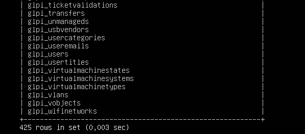

1. Préparation de l’environnement serveur
Installation du système de Serveur Linux (Ubuntu ou Debian)
Donner une adresse IP fixe au Serveur, dans mon cas 192.168.22.66/24
Une fois l'installation terminée j'effectue les mises à jour du système
Installation des composants nécessaires Linux, Apache, MariaDB/MySQL, PHP.
Installation des modules PHP requis par GLPI
2. Préparation de la base de données
Je me connecte à MariaDB ou MySQL
Création d'une base de données et un utilisateur pour GLPI

3. Installation des fichiers GLPI
Téléchargement de la dernière version d'archive GLPI depuis le site officiel ou GitHub
Décompression de l’archive à un endroit stratégique tel que /var/www/html/glpi
Je fais de l'utilisateur Apache le propriétaire avec : chown -R www-data:www-data /var/www/html/glpi/
Redémarrage du service Apache pour prendre en compte les changements
4. Installation via l’interface web
Ouverture d'un navigateur pour accéder à : http://"IP_du_serveur"/glpi
Choix de langue "Français", acceptation de la licence, cliquer sur Installer
Vérification des prérequis avant finalisation
Je saisis les informations de connexion à la base de données (hôte, utilisateur, mot de passe, base)
5. Actions post-installation
Première connexion via l'utilisateur : glpi / glpi
Création de différents utilisateurs sur la base interne GLPi, chacun ayant leur rôle : Superviseur, Technicien, Utilisateur
Création de tickets fictifs jusqu'à cloture pour se familiariser avec l'interface
6. Intégration Utilisateurs AD (facultatif)
Je possède une VM d'un Active Directory déjà peuplé (créée au préalable)
Je me rends dans le menu Configuration > Authentification > Annuaire LDAP > Ajouter
Je renseigne les paramètres de l'annuaire afin d'établir le lien
Test de la connexion pour établir le lien
J'importe les utilisateurs depuis Administration > Utilisateurs
Cliquer sur Liaison annuaire LDAP ou Importer des utilisateurs
Choix des utilisateurs à intégrer, puis Actions > Importer
Après l’import, une nouvelle base de donnée est sélectionnable à la Connexion Utilisateur et chaque Utilisateur Active Directory peut se connecter avec ses identifiants